AI and Operations Research concentration. Data pipelines, process design, and the surveys that tell you what to build before you build it.
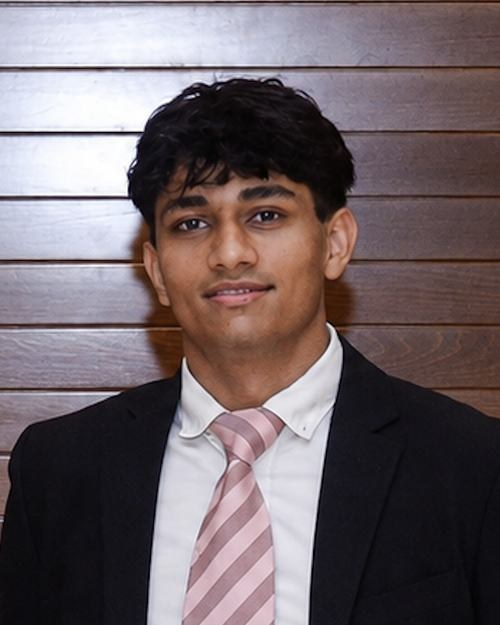
I study Industrial and Systems Engineering at Georgia Tech, concentrating in AI and Operations Research (Class of 2028). I transferred from Georgia State’s Honors College, where I took engineering coursework and served as Executive Vice President of the Student Government Association on the Alpharetta campus.
A lot of my work starts with messy data or a process that wastes people’s time. At Roamio I cleaned up how campus event listings came in. At CampusPing we ran a demand survey before building anything, and 97.2% of respondents said they wanted it.
Before Atlanta I lived in Cyprus, where I co-founded a clothing brand and helped organize a UN-partnered youth diplomacy conference. I speak English, Greek, Gujarati, and Hindi. Outside class I take photos with my DSLR, see films in IMAX, and keep a consistent gym routine. I also donate blood and run blood drives with the American Red Cross, a habit my dad instilled in me and one I enjoy.
I built and maintained the event data pipeline, standardizing listings from campus organizations so duplicate and incomplete entries stopped getting through, and set up AI screening for every submission. I also designed A/B tests on notification timing and ran a Likert-scale survey across the organization. We applied the results to the DoorDash-partnered Roamio launch events, and attendance went up 73%.
CampusPing is a class registration tool that sends real-time seat alerts and registers students automatically. I designed, fielded, and analyzed a demand survey across University System of Georgia campuses, wrote the business plan and investor pitch deck, and led in-person marketing at Georgia State.
A clothing brand I co-founded in Cyprus. We sold an eight-product line on Shopify, marketed it through local influencer partnerships, and ran the whole operation from design through fulfillment while still in secondary school.
Open any card for the method and the numbers.
Can you predict how a film will be rated using only what’s known before release? I chunk-read IMDb’s public files, scraped box office figures with BeautifulSoup, pulled OMDb metadata, and joined everything on a normalized title key for 48,676 cleaned rows.
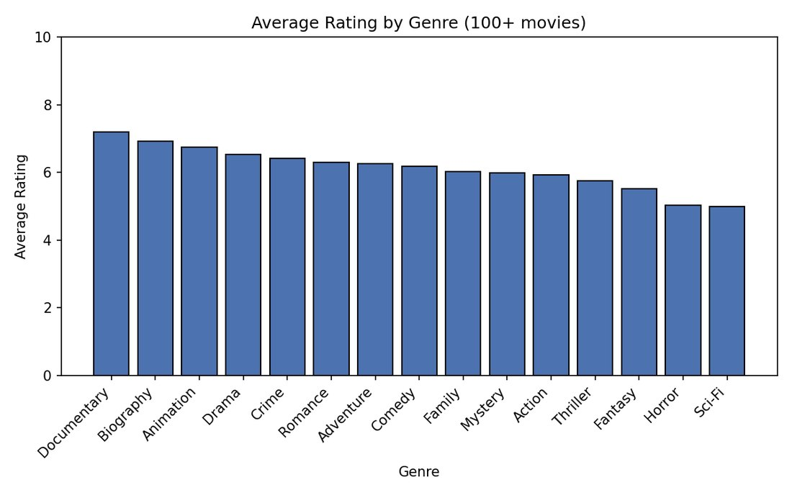
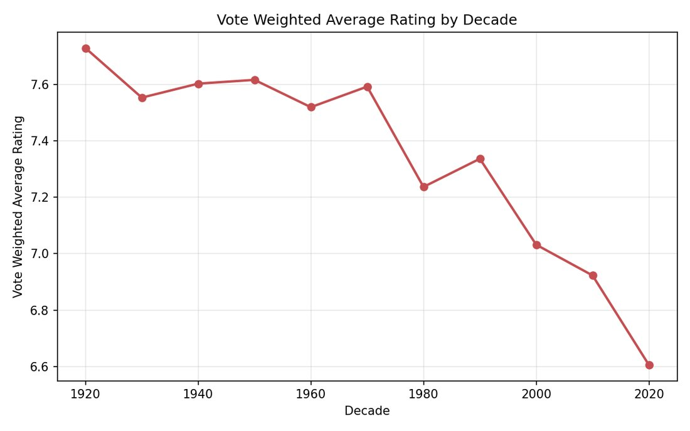
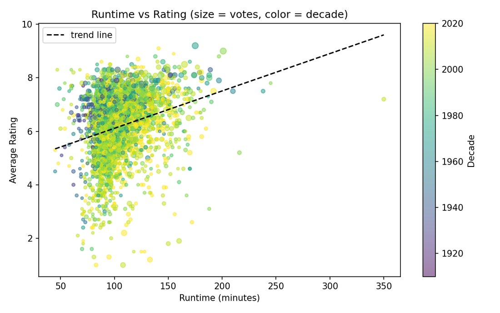
Genre was the strongest predictor, with a spread of more than 2 rating points. Ratings also fall steadily by decade (correlation −0.909), but that’s survivorship bias, not falling quality.
A team project for Database Systems. We took a 15-table delivery-network database from a requirements spec to an EER model to a normalized schema, then wrote 21 stored procedures and 7 reporting views. Every write goes through a procedure that validates first and leaves the database untouched if anything fails.
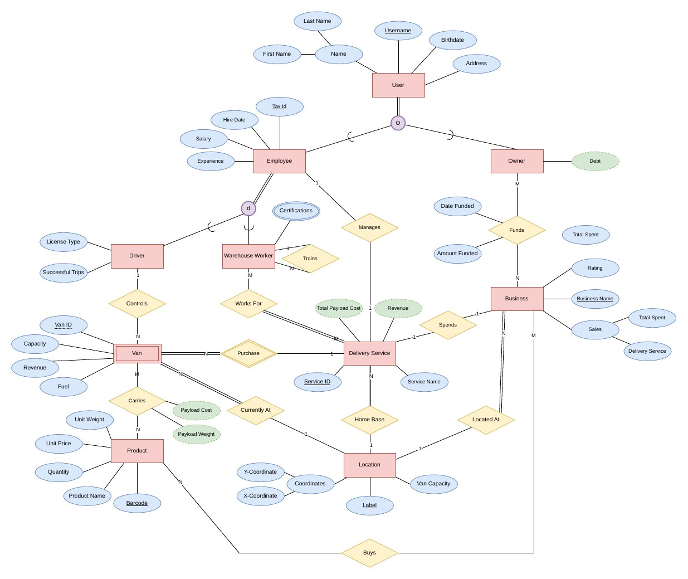
The routing logic computes fuel cost as Euclidean distance between grid locations and refuses any trip a van can’t complete in both directions, so no van can strand itself. Loads run under serializable isolation, so two concurrent loads can’t both pass the same capacity check.
For my GIS course I measured PM2.5 and traffic exposure around 26 Atlanta-area school campuses. I combined EPA air-quality metrics with GDOT traffic volumes inside 250 m, 500 m, and 1,000 m buffers, then flagged the campuses where the buffers overlap both high-volume arterial roads and elevated PM2.5.
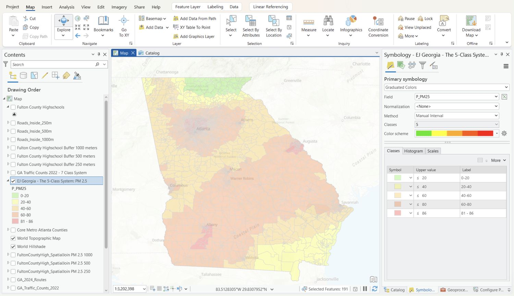
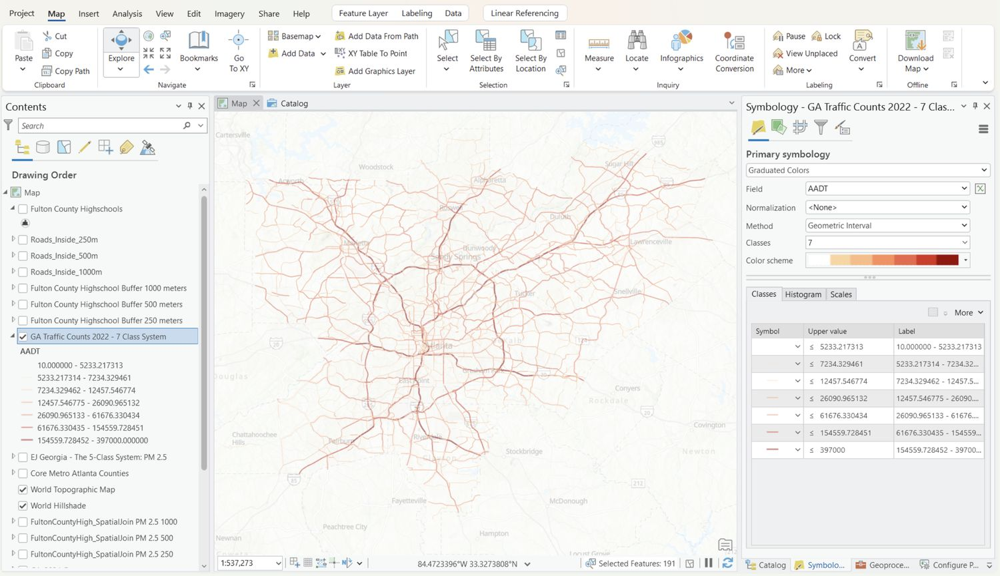
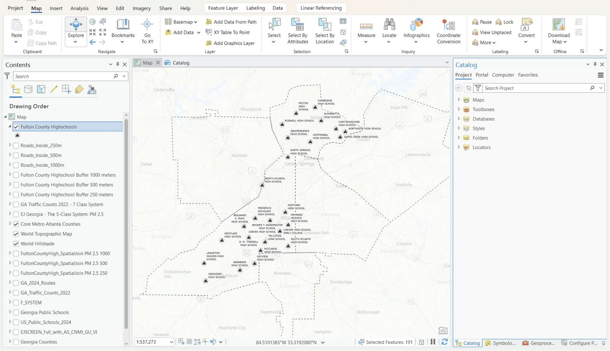
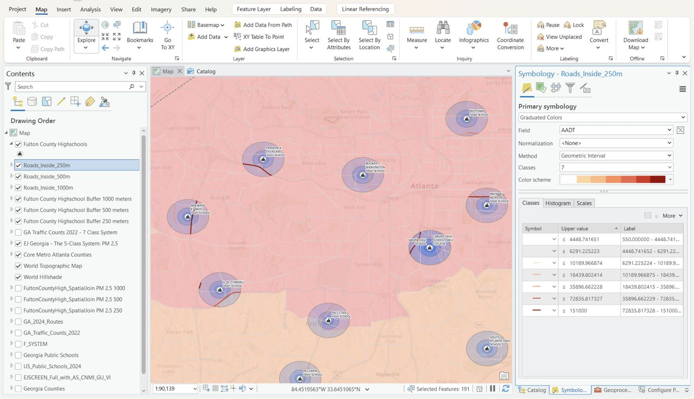
The findings are published as a public StoryMap.
I represented 800+ students on the Alpharetta campus and interviewed and picked a team of 15 to carry out our 2025–26 “Collaboration and Service” plan. Working with the University-Wide Executive Committee and deans, we ran involvement fairs, intercampus events, blood drives, clothing drives, and Salvation Army gift donations. I hosted the university-wide senate meeting for 70+ student leaders, faculty, and department heads, and organized an intercampus soccer tournament that pulled all six GSU campuses into the largest Perimeter event of the year.
I wrote the club’s governing legislation, recruited a 5-member executive team and a faculty advisor, and grew it to 30+ members. We hosted the AMATYC national math competition on campus, started faculty-led tutoring for gateway math courses, and toured Delta TechOps.
I ran the Alpharetta campus senate, including its first in-person meeting in four years, filled every senate seat through interviews, and grew student volunteers on committees by 66%. I received the SGA Service Award for the term.
My dad took me to my first donation when I was 16, and giving blood turned into something my family does together, year after year. Running drives on campus grew out of that. Walking someone through their first donation, then watching them come back for the next one, is still the part of all this I am proudest of.
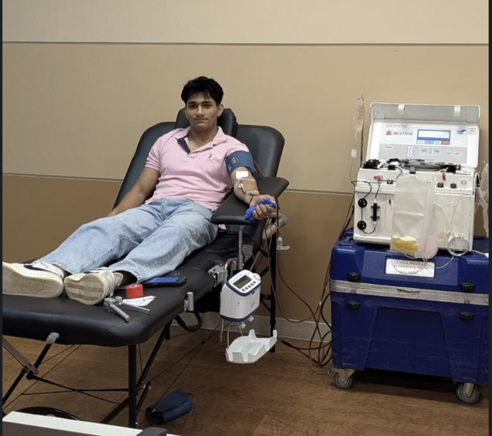
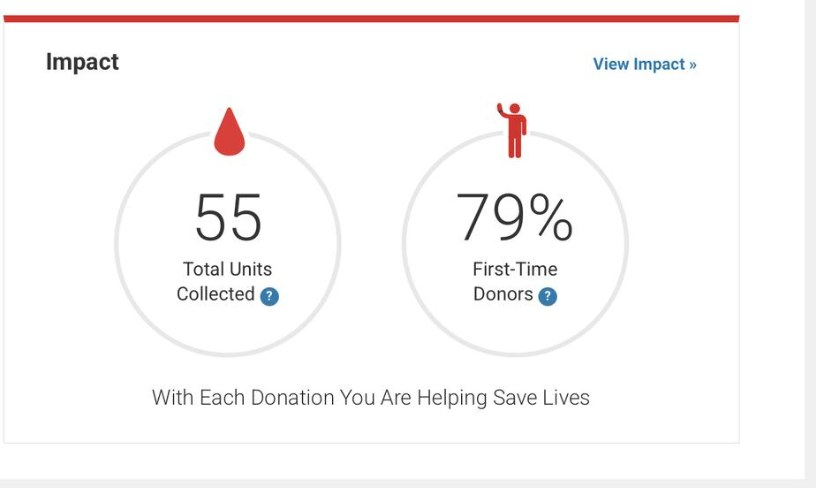
I started the campus blood program with the Red Cross and have run every drive since: recruiting donors, scheduling the slots, and staffing the day itself with SGA volunteers. The first drive collected 27 units and passed the goal the Red Cross set for us. Across the program, 55 units so far and 79% of donors giving for the first time.
I backed senators running their own initiatives. The clothing drive collected 7+ loads and left permanent donation points on campus, and the Angel Tree collection filled every Salvation Army request and then went past it.
I handled technology and logistics for a UN-funded youth peace conference. That meant coordinating with UNFICYP peacekeeping forces, securing the Ledra Palace Hotel in the UN buffer zone as the venue, and recruiting sponsors. I ran the same side of the European Youth Parliament sessions in Cyprus.
I chaired the Historical Security Council, the advanced committee, guiding and judging 20 selected delegates from schools across the Mediterranean.
Trained as a first responder and emergency medical technician, and led the first aid unit as its lieutenant, covering public events on the island.
Looking for industrial and systems engineering roles in operations research, analytics, or product. Email is the best way to reach me.